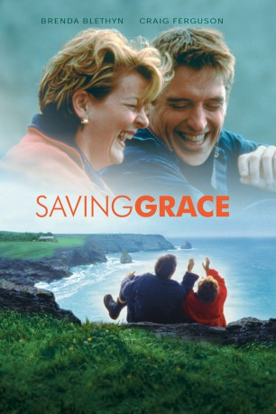

#8229 Grasgeflüster
Alternativ: Saving Grace
 
 IMDB-Wertung: 6.9 / 10
IMDB-Wertung: 6.9 / 10  Metascore: 0
Metascore: 0 
A widow discovers after her husband's suicide that he has mortgaged everything they own and the banks are ready to foreclose. Faced with impending doom and little working knowledge except her ability to grow plants, she struggles to save her home. Enter her gardener, who is struggling to make a few marijuana plants grow in a hidden location and suggests that she use her green house to help grow the plants and sell them to make the money both need. He is wanting to get married, but needs capital. What he doesn't know is that his girl friend is pregnant and thus fears that they will be busted for growing marijuana. While supposedly working, the whole village is well aware of the endeavor and is hoping for their success. When the plants come in, Grace takes the crop to London and tries to sell it to a ruthless, but charming drug dealer. Everything busts loose from there.
Jahr: 2000
Dauer: 94 Minuten
FSK: 6
Land: England Studio: AdvancedTonspuren:
Untertitel:
Auflösung: 1080p (1920x1040) Größe: 10649 MB
Genre: Komödie, Krimi
Regisseur: Nigel Cole
Drehbuch: Mark Crowdy
Soundtrack: Mark Russell
Darsteller:
 Brenda Blethyn als Grace
Brenda Blethyn als Grace Craig Ferguson als Matthew
Craig Ferguson als Matthew Martin Clunes als Dr. Bamford
Martin Clunes als Dr. Bamford Tchéky Karyo als Jacques
Tchéky Karyo als Jacques Jamie Foreman als China
Jamie Foreman als China Bill Bailey als Vince
Bill Bailey als Vince- Tristan Sturrock als Harvey
 Clive Merrison als Quentin
Clive Merrison als Quentin Leslie Phillips als Vicar
Leslie Phillips als Vicar- Diana Quick als Honey
 Phyllida Law als Margaret
Phyllida Law als Margaret Paul Brooke als Charlie
Paul Brooke als Charlie- John Fortune als Melvyn
- Dean Lennox Kelly als Bob
- Bill Weston als John Trevethan
 Jay Benedict als Master of Ceremonies
Jay Benedict als Master of Ceremonies- Gary Greenberg als Inmate (uncredited)
 Trevor White als Wally (uncredited)
Trevor White als Wally (uncredited)- Valerie Edmond als Nicky
- Linda Kerr Scott als Diana
- Denise Coffey als Mrs Hopkins
- Ken Campbell als Sgt. Alfred
- Philip Wright als Nigel
- Darren Southworth als Terry
- Magnus Lindgren als Tony
- Johnny Bamford als Removal Boss
- Bill Hallet als Postman
- Alison Dillon als Secretary
- Jonathan Kydd als Presenter 1
- Mark Crowdy als Presenter 2
- Ben Cole als Man at checkout
- Alexander Jovy als Man in Taxi (uncredited)
Datei: X:\2000\Grasgeflüster (2000, FSK6, 1920x1040).mkv seit 11.02.2018
Festplatte: HD 1996-2002
 Es gibt insgesamt 82 Filme in der Gruppe '2000'
Es gibt insgesamt 82 Filme in der Gruppe '2000'